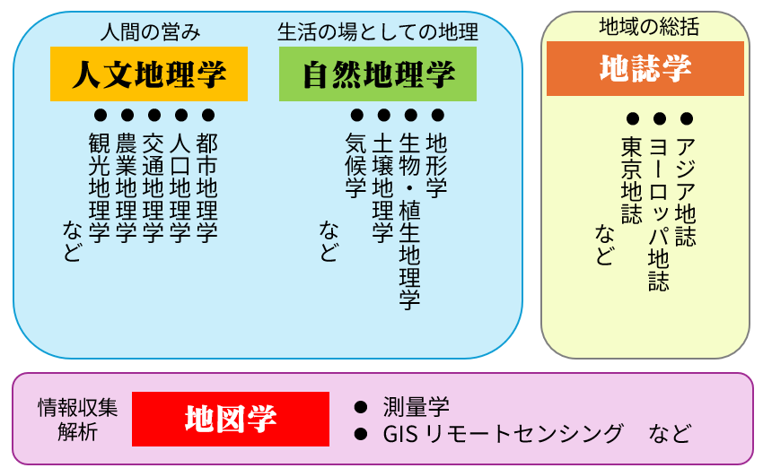

１ 地理学
地理学とは
地理学は、空間、地域という特有の見方でアプローチする学問であり、複合科学的な性質を持つ。地上に存在するあらゆる事象には、空間と地域が伴うので、あらゆる事が地理学の対象となる。

地理的条件の分析科学としての地理学
地理的条件の生成とメカニズム、及び、地理的条件間の関係について分析し、その中から普遍的な原理を導き出す。
⇒ 系統地理学
- 地理的条件
- 位置・地形・気候・土壌・植生・資源などの自然条件
- 文化や社会組織などの人文・社会的条件
- 分析対象となる地理的条件により体系化
- 自然地理学：都市のヒートアイランド問題、土砂災害etc
- 経済地理学：農業活動、企業活動と空間特性etc
- 政治地理学：地図上の相対的位置と政治との関係
- 文化地理学：地域文化の生成とあり方
場所（地域）の総合科学としての地理学
場所に関する知識を整理・表現すると同時に、ある空間的範囲に居住する人類集団が作り出してきた特徴（場所の個性）を見いだし、その場所の理解を深める
⇒ 地誌学
- 地理的条件の複合性を構造的に把握して、地域性を明らかにする
- 人種や民族による人類学的形態
- 言語
- 衣食住のあり方
- 祈りの形態
- 社会の構造
- 人間の感性や行動形態
地域を記述すること ＝ 地域を知ること
その地域を治めるための効果的な手段
Ex）風土記など
地理学の重要性
地理を知ることは、以下のような重要性がある
地域に係る諸問題の解決
地域活性化のプロジェクトの検討なども、地域の歴史や変遷、統計などを調査し、その地の地域性やそれに適応できる形でのビジネスモデルの構築などにむけて地理的に分析し、その地域性の対策に使用できる
国家戦略の立案
国家の存立は食料と天然資源にかかっており、いかに安定的に・継続して収集できるかがカギとなる。
食料生産地・天然資源の分布は限定的で、生産地が自国外となると、その国家との関係性、輸送ルートの確保（外交戦略）がカギとなるだけでなく、自国の産業政策（食糧安保等）にも影響を与える。
⇒ 地政学 （地理は政治の基礎情報）
自然災害への対応と日常生活への応用
これまで人類は、自然環境を利用して、文明を築き上げてきた。我々は自然から意識するしないに関わらず恩恵をうけると同時に、様々な災害も被っている。
自然環境の「しくみ」を理解することで、更なる恩恵を受けられると同時に、災害も避けることが可能になる。
環境決定論と環境可能論
ヒトの日々の暮らしを取り巻く諸条件
- 自然条件・・・気候、地形、地質、植生、水など
- 人文・社会条件・・・政治、経済、社会、産業、交通など
人間の生活様式は、その地域の自然環境によって決定づけられる
自然環境は人間に機会を与える存在として位置づけられる
いずれにせよ自然環境は、人間の行動に強く影響を与えている。
地域性とは
その地で見られる自然的・人文的な特徴
多様性・空間性・関連性・時間性・階層性を認識することが、自然災害や環境問題の軽減につながるだけでなく、その地域が抱える諸問題を分析し、その答えを提示することができる。